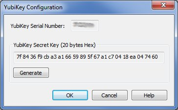
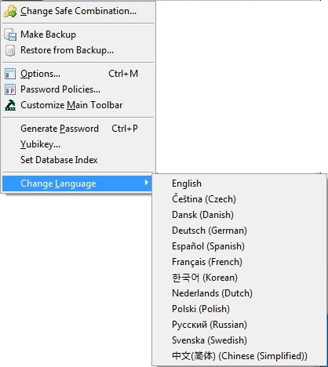

Selecting Options... brings up a tabbed dialog where
many of Password Safe's settings can be viewed and edited.
To learn more about a specific tab select it below:
This allows you to manage both the database default password policy and named
password policies. You may create up to 255 named password policies. The name of
a password policy can be at most 255 characters long.
Customize Main Toolbar
This allows you to select which commands appear on the toolbar, and in which order.
Generate Password
This allows you to generate a password with a specified password policy to be put into the
clipboard, by pushing Generate. The password in the clipboard can then be used by some
other application. You may select the database default password policy, a named password
policy or use a specific policy you enter into dialog.
Yubikey
This allows you to customize your optional YubiKey
device so that you can use it to access your Password Safe database, as well
as creating a backup YubiKey in case the original get lost or damaged.

To customize your YubiKey
Insert your YubiKey into your PC's USB slot
Select the Manage->Yubikey... menu item. The YubiKey Configuration dialog
box will appear.
Your YubiKey's Serial Number should be displayed. If this field is blank, make
sure your YubiKey is plugged in correctly.
Click on the Generate button. This will create a 20 byte random secret key that
will be written to your YubiKey, and used to access your database.
Click on Set Yubikey. This will write the generated key to your YubiKey, and
save the data in encrypted form in your Password Safe database, so that you
can use it to configure a backup key.
If the configuration is successful, then the dialog box will close. If not,
then an error message will appear describing the problem.
Click on Close to exit the dialog box.
Note: After configuring your YubiKey, you must change the
database's password to use the YubiKey for authentication as described
in Changing Master Passwords
To create a backup YubiKey
Insert your backup YubiKey into your PC's USB slot
Select the Manage->Yubikey... menu item. The YubiKey
Configuration dialog box will appear.
Your backup YubiKey's Serial Number should be displayed. If this field
is blank, make sure your YubiKey is plugged in correctly.
Do not click on the Generate button. The data displayed
in the "YubiKey Secret Key" field is the key associated with this
database. This is the key that will be written to your backup YubiKey.
Click on Set Yubikey. This will write the generated key to your backup YubiKey.
If the configuration is successful, then the dialog box will
close. If not, then an error message will appear describing the problem.
Click on Close to exit the dialog box.
Change Language

If you have installed all the currently available additional language DLLs when
Password Safe was installed (which is the default), you will have the ability
to switch between these languages on-the-fly via this menu item.
After changing the language, all menus, dialogs and messages will now be in your chosen
language.